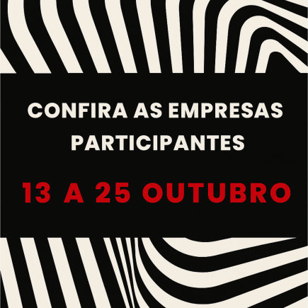
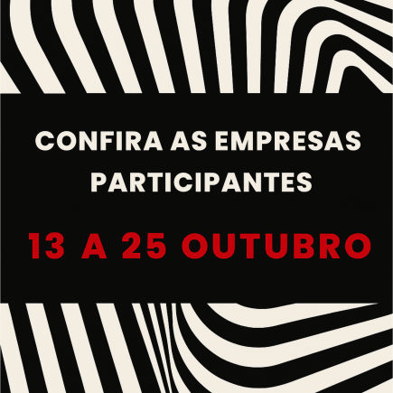

Venha aprender, conectar e
se inspirar com quem ama
design como você!
Rede Conceito Design Week
Onde conhecimento vira conexão!
 



Kyowa
Tapetes: Tradição, Arte e Contemporaneidade
Um mergulho da história, evolução, cultura e o papel do design atualmente.
Vagas: Limitadas
13
OUTUBRO
19h00
Alhambra Móveis, Ateliê Vivi Catelan, RCG Pisos de Madeira e We Home System Automação
Design Conecta: uma imersão criativa que une marcas e mentes transformadoras.
A manhã será marcada por palestras exclusivas e networking entre profissionais da arquitetura e do design de interiores.
Alhambra Móveis:
Palestra: “Entre Propósito e Paixão”
Facilitador: Victor Leite
Reflexão sobre a união entre propósito e paixão no processo criativo e no mercado de interiores.
RCG Pisos de Madeira:
Palestra: “Nas Raízes da Excelência: Por que a Indusparquet é a Melhor Escolha”
Abordagem sobre a história do grupo Indusparquet, sustentabilidade, obras de referência no Brasil e no mundo e diferenciais técnicos para especificação de madeira nobre.
Ateliê Vivi Catelan:
Palestra: “A Influência da Estampa na Composição de Ambientes”
Reflexão sobre a importância das estampas, como compor e enriquecer projetos com tecidos exclusivos e combinações sofisticadas.
We Home System Automação:
Experiência imersiva: demonstrações de soluções em automação, apresentando tecnologia aplicada ao bem-estar e praticidade dentro da própria Alhambra.
Vagas limitadas: 100
14
OUTUBRO
09h às 14h
Estúdio Étoile
Exposição "Cinzeiros". Objeto da moda virou cinzas.
Exibição de coleções de cinzeiros de várias décadas. Objeto obrigatório em qualquer casa desapareceu do cotidiano quando mudaram os hábitos da sociedade.
Vagas: Indeterminado
14
OUTUBRO
10h às 20h
PURA ÁGUA E AR
INOVAÇÃO E TECNOLOGIA NA SAÚDE DA MULHER!
O cuidado íntimo, cabelos e pele começam pela água!
Venha descobrir sobre estética íntima com ela, que fala o que você sempre quis saber e nunca teve a quem perguntar, a especialista em saúde da mulher, Dra. Bruna Knudsen.
Tudo sobre mega hair e tratamentos capilar com a cabeleireira especialista, Lilian Sampaio.
Como transformar o banho em um ambiente de autocuidado? O toque da água filtrada tem o poder de reduzir estresse e melhorar na sua disposição, venha descobrir tudo com a executiva de vendas da Pure Shower, Helaine Varoto.
Facilitadores: Dra. Bruna Knudsen, Lilian Sampaio, Helaine Varoto.
Vagas limitadas: 20
14
OUTUBRO
17h
Coisas da Casa
"Experiência Sensorial na Decoração: Arte, Design e Fragrâncias"
LAMP BERGER (17:00h):
Aromatizador e perfume de ambientes – “Perfume que transforma: bem-estar e identidade em cada espaço”. Mais do que perfumar, as fragrâncias Lamp Berger purificam o ar, eliminam odores indesejados e criam uma atmosfera memorável. Descubra como escolher o aroma certo para reforçar a identidade do ambiente e despertar emoções.
LOPOMO (18:00h):
Do Atelier ao Ambiente: a força da escultura no design de interiores. Obras que unem diferentes materiais, onde forma e cor trabalham em harmonia na busca da “arte complementar”. Com 70 séries entre esculturas e painéis, cada criação nasce da experimentação contínua, aperfeiçoando trabalhos anteriores ou preenchendo lacunas. O estúdio atua no limite entre arte e design, produzindo peças únicas ou em edições limitadas, combinando técnicas artesanais, novos materiais e diversidade de processos, sempre atento à interação com o espaço.
ALUMEN (19:00h):
Colares e Pedras Decorativas | O Valor do Feito à Mão: Descubra a beleza dos colares decorativos e da pedraria artesanal em múltiplos estilos. Peças únicas que unem tradição e contemporaneidade, perfeitas para transformar mesas, aparadores ou paredes com personalidade. Cada pedra carrega uma energia especial, um significado próprio que vai além da estética, pequenos detalhes capazes de renovar completamente qualquer ambiente.
Facilitadores: Ana Paula Unheizer (Lamp Berger), Mário Lopomo (Lopomo), Marisa Menegon (Alumen).
Vagas limitadas: 50
14
OUTUBRO
17h às 20h
LL Vidros
Summit Arq
Palestras para o mercado arqdecor
Vagas limitadas: 300
15
OUTUBRO
09h às 18h
Marmoraria Santista
Tudo que você precisa saber sobre especificação de materiais de marmoraria!
Especificação de materiais naturais e industrializados.
Vagas limitadas: 50
16
OUTUBRO
16h
Empório dos Colchões
Qualidade de vida começa na cama
Descubra como a escolha do colchão e dos móveis certos pode transformar suas noites de sono e elevar sua qualidade de vida. Neste encontro, vamos apresentar as últimas tendências em colchões e mobiliários para quarto, com dicas práticas para garantir conforto, saúde e bem-estar. Uma oportunidade única para conhecer produtos de alto padrão e entender como investir em um descanso verdadeiramente reparador.
Vagas limitadas: 50 Pessoas
16
OUTUBRO
17h
Pastilhacor e Térmica
“Mentalmente Forte, o segredo por trás das conquistas”
Palestra será dada por Fábio Uliana, fundador do Arquiteto Mais.
Facilitador: Fábio Uliana (fundador do Arquiteto Mais)
Vagas limitadas: 50
16
OUTUBRO
17h
Prime Mármores & Granitos e Prime Reformas
Palestra sobre Inteligência Artificial e o Impacto para os Profissionais de Arquitetura e Design
Workshop com especialista em Inteligência Artificial.
Facilitador: Especialista em Inteligência Artificial
Vagas limitadas: 80
17
OUTUBRO
14h às 17h
Studio Guido Projetos de Iluminação Integrativa
Os impactos da luz elétrica na saúde humana
Workshop: Desvendando a Iluminação Integrativa, trazendo um novo olhar e uma nova abordagem projetual, para reflexão da responsabilidade de se projetar a luz dos ambientes contemporâneos, promovendo bem-estar e melhorando a qualidade de vida dos usuários.
Facilitador: Adriana Tedesco (Lighting Designer Naturopata)
Vagas limitadas: 40
17
OUTUBRO
17h às 19h
Zuffo Paisagismo e Arco Decor
Biofilia na Arquitetura
Vagas limitadas: 25
17
OUTUBRO
18h às 21h
Dekori Planejados
CASA & ARTE - PRIMEIRA EDIÇÃO
A Dekori celebra a arte como inspiração para transformar cada lar em um espaço único, cheio de expressão e personalidade. Mais do que uma palestra, queremos criar um verdadeiro movimento artístico dentro da loja, reforçando que morar bem é também viver cercado de arte. A experiência será sensorial, unindo música, artes visuais e interação para transformar a visita em um momento único de inspiração.
Vagas limitadas: 30
20
OUTUBRO
16h às 19h
GTE elétrica e Iluminação
Tendências na iluminação de LED - Marca Gaya
Será um café da manhã, onde estaremos expondo produtos da marca Gaya e o representante estará na loja explicando sobre os produtos, seu uso, instalação e tirando dúvidas.
Facilitador: Representante da marca Gaya
Vagas limitadas: 25
21
OUTUBRO
9h às 12h
Astúrias Conceito e Prumo Engenharia
Construa sua própria arte
Um evento que transforma materiais de constru√ß√£o em expressão art√≠stica. Nesta viv√™ncia, cada profissional terá a oportunidade de criar sua pr√≥pria escultura utilizando revestimentos de tijolinhos, explorando formas, volumes e texturas. Mais do que uma atividade manual, será um momento de criatividade, inspira√ß√£o e conexão, onde cada obra refletirá o estilo e a identidade de quem a cria. üé® Monte sua pr√≥pria arte, construa sua pr√≥pria escultura e leve consigo essa experi√™ncia única.
Vagas limitadas: 20
21
OUTUBRO
16h
Casa Art Móveis
Metalon em Cena: Design & Sofisticação nos Projetos Contemporâneos
A Casa Art Móveis, em parceria com a Zartha Móveis, convida você para uma experiência única que une criatividade, técnica e inovação. O encontro terá como destaque o uso do metalon em projetos de marcenaria e design de interiores — uma tendência que vem transformando ambientes com personalidade, elegância e versatilidade. Durante o evento, serão apresentadas soluções construtivas, detalhes técnicos e aplicações criativas do metalon em diferentes estilos de projetos, desde a pegada industrial até versões sofisticadas em cores nobres como dourado e rosê gold. Mais do que uma mostra de possibilidades, este é um espaço de inspiração e conexão: arquitetos, designers, parceiros e o público em geral terão a oportunidade de explorar novas ideias, conhecer tendências e descobrir como a união entre a marcenaria de alta qualidade da Casa Art Móveis e a expertise em serralheria da Zartha Móveis pode elevar ainda mais o resultado final de seus projetos. O evento é aberto a todos que desejam se inspirar e mergulhar no universo do design e da arquitetura. Participe e descubra como transformar seus ambientes com inovação, estilo e sofisticação.
Vagas limitadas: 20
21
OUTUBRO
16h às 18h30
Couto Materiais para Construção
Arquitetura em Foco: Tendências e Negócios no Digital
Um encontro exclusivo para arquitetos que une inspiração e estratégia. A Suvinil apresentará as principais tendências de cores para projetos, trazendo inovação e criatividade ao dia a dia da arquitetura. Em seguida, a especialista Tatyana Jorge conduz a palestra “Arquitetura Digital: como transformar seguidores em clientes”, revelando caminhos práticos para fortalecer sua presença online e conquistar novas oportunidades de negócio. Para completar, teremos um delicioso coffee break, ideal para trocar experiências e ampliar conexões.
Facilitadores: Tatyana Jorge (Palestra "Arquitetura Digital") e Suvinil (Tendências de cores).
Contato empresa: (13) 3347-0000
Vagas limitadas: 30
22
OUTUBRO
16h às 19h
Revestimentta
Como a IA Redefine a Forma de Pensar Arquitetura
Vagas limitadas: 40
22
OUTUBRO
16h
Quatri Automação
Descomplicando a automação
Vagas limitadas: Indeterminadas
22
OUTUBRO
19h às 21h
Casa Mármore & Jadir Battaglia
Arte & Mármore
Vagas limitadas: 25
23
OUTUBRO
9h
Ecodecor
Coloração Pessoal e o Impacto para os profissionais de arq design
Workshop com Erica Capelo, especialista em coloração pessoal.
Facilitador: Erica Capelo
Vagas limitadas: 15
23
OUTUBRO
16h às 18h
Santo Linho
A arte de encantar o cliente
Vagas limitadas: 25
23
OUTUBRO
18h às 21h
Erika Martins StudioArt e Jadir Bataglia
Arquitetura do Imaginário
Uma pausa criativa para Arquitetos, um encontro de colagem artística pensando especialmente em você. Entre papéis, cores e composições, vamos explorar novas formas de olhar, criar e se inspirar!
Vagas limitadas: 12
24
OUTUBRO
14h30 às 16h30
Sate Conceito
VIVA A VIDA
‚ÄúMais saúde, mais bem-estar, mais voc√™! üí™ Participe do ‚ÄòViver a Vida‚Äô com educador f√≠sico: Allan Lucas Jacques, quiroprata: Mauro-João e m√©dico especialista em rejuvenescimento: Dra. Elizabeth Senra.
Facilitadores: Allan Lucas Jacques (Educador Físico), Mauro-João (Quiroprata), Dra. Elizabeth Senra (Médica)
Vagas limitadas: 70
24
OUTUBRO
18h às 22h
Green House + RC Soluções
“Conecte-se com Você: Constelação Familiar & Marca Pessoal”
Imagine dois universos se encontrando em um mesmo espaço: o da Constelação Familiar, que revela padrões ocultos e desperta novos caminhos de consciência, e o da Marca Pessoal, que fortalece identidade, presença e posicionamento no mercado. Neste encontro exclusivo, Anderson Zanchin (especialista em Personal Branding e Marketing Pessoal) e Jeniffer Plácido Zatorre (terapeuta quântica e consteladora sistêmica) conduzirão uma experiência única, unindo autoconhecimento e estratégia. Arquitetos, designers e profissionais da área terão a oportunidade de:
- Refletir sobre seus padrões internos que influenciam decisões e relacionamentos;
- Descobrir como alinhar essência e imagem, fortalecendo sua presença pessoal e profissional;
- Participar de uma roda de facilitação prática, integrando vivência emocional e branding.
Um convite para quem deseja ir além da técnica e mergulhar em um processo de despertar intrapessoal — conectando propósito, relações e marca pessoal em um só movimento.
Facilitadores: Anderson Zanchin (especialista em Personal Branding e Marketing Pessoal) e Jeniffer Plácido Zatorre (terapeuta quântica e consteladora sistêmica)
Vagas limitadas: 40
25
OUTUBRO
10h às 12h